import numpy as np
import shapely
import geopandas as gpd
import topojson as tp
import rasterio
import rasterio.warp
import rasterio.plot
import rasterio.mask
import sys4 Geometry operations
Prerequisites
This chapter requires importing the following packages:
It also relies on the following data files:
seine = gpd.read_file('data/seine.gpkg')
us_states = gpd.read_file('data/us_states.gpkg')
nz = gpd.read_file('data/nz.gpkg')
src = rasterio.open('data/dem.tif')
src_elev = rasterio.open('output/elev.tif')4.1 Introduction
So far the book has explained the structure of geographic datasets (Chapter 1), and how to manipulate them based on their non-geographic attributes (Chapter 2) and spatial relations (Chapter 3). This chapter focuses on manipulating the geographic elements of geographic objects, for example by simplifying and converting vector geometries, and by cropping raster datasets. After reading it you should understand and have control over the geometry column in vector layers and the extent and geographic location of pixels represented in rasters in relation to other geographic objects.
Section 4.2 covers transforming vector geometries with ‘unary’ and ‘binary’ operations. Unary operations work on a single geometry in isolation, including simplification (of lines and polygons), the creation of buffers and centroids, and shifting/scaling/rotating single geometries using ‘affine transformations’ (Section 4.2.1 to Section 4.2.4). Binary transformations modify one geometry based on the shape of another, including clipping and geometry unions, covered in Section 4.2.5 and Section 4.2.7, respectively. Type transformations (from a polygon to a line, for example) are demonstrated in Section Section 4.2.8.
Section 4.3 covers geometric transformations on raster objects. This involves changing the size and number of the underlying pixels, and assigning them new values. It teaches how to change the extent and the origin of a raster “manually” (Section 4.3.2), how to change the resolution in fixed “steps” through aggregation and disaggregation (Section 4.3.3), and finally how to resample a raster into any existing template, which is the most general and often most practical approach (Section 4.3.4). These operations are especially useful if one would like to align raster datasets from diverse sources. Aligned raster objects share a one-to-one correspondence between pixels, allowing them to be processed using map algebra operations (Section 3.3.3).
In the next chapter (Chapter 5), we deal with the special case of geometry operations that involve both a raster and a vector layer together. It shows how raster values can be ‘masked’ and ‘extracted’ by vector geometries. Importantly it shows how to ‘polygonize’ rasters and ‘rasterize’ vector datasets, making the two data models more interchangeable.
4.2 Geometric operations on vector data
This section is about operations that in some way change the geometry of vector layers. It is more advanced than the spatial data operations presented in the previous chapter (in Section 3.2), because here we drill down into the geometry: the functions discussed in this section work on the geometric part (the geometry column, which is a GeoSeries object), either as standalone object or as part of a GeoDataFrame.
4.2.1 Simplification
Simplification is a process for generalization of vector objects (lines and polygons) usually for use in smaller scale maps. Another reason for simplifying objects is to reduce the amount of memory, disk space and network bandwidth they consume: it may be wise to simplify complex geometries before publishing them as interactive maps. The geopandas package provides the .simplify method, which uses the GEOS implementation of the Douglas-Peucker algorithm to reduce the vertex count. .simplify uses the tolerance to control the level of generalization in map units (Douglas and Peucker 1973).
For example, a simplified geometry of a 'LineString' geometry, representing the river Seine and tributaries, using tolerance of 2000 meters, can be created using the seine.simplify(2000) command (Figure 4.1).
seine_simp = seine.simplify(2000)
seine.plot();
seine_simp.plot();
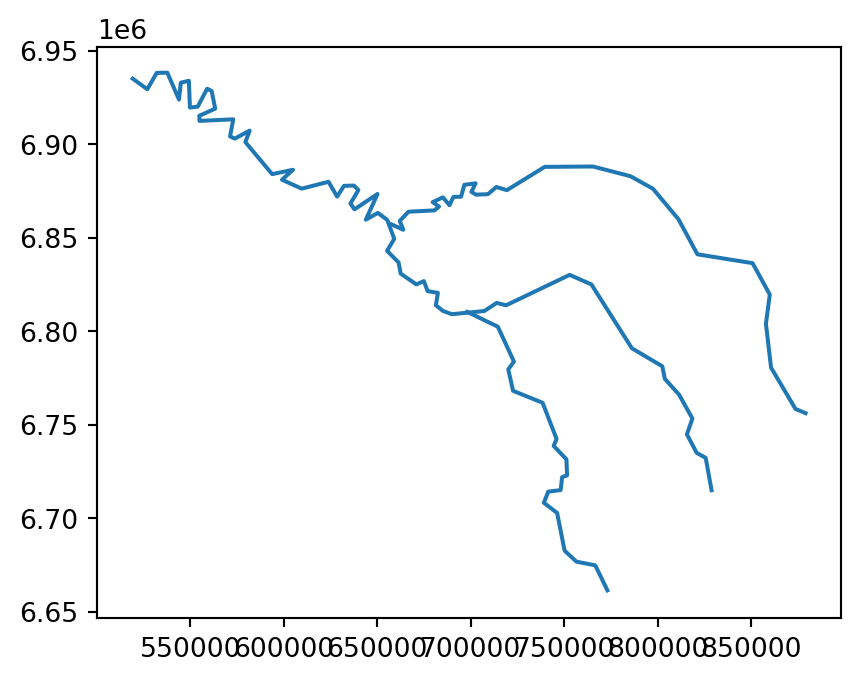
seine line layerThe resulting seine_simp object is a copy of the original seine but with fewer vertices. This is apparent, with the result being visually simpler (Figure 4.1, right) and consuming about twice less memory than the original object, as shown in the comparison below.
print(f'Original: {sys.getsizeof(seine)} bytes')
print(f'Simplified: {sys.getsizeof(seine_simp)} bytes')Original: 374 bytes
Simplified: 188 bytesSimplification is also applicable for polygons. This is illustrated using us_states, representing the contiguous United States. As we show in Chapter 6, for many calculations geopandas (through shapely, and, ultimately, GEOS) assumes that the data is in a projected CRS and this could lead to unexpected results when applying distance-related operators. Therefore, the first step is to project the data into some adequate projected CRS, such as US National Atlas Equal Area (EPSG:9311) (on the left in Figure Figure 4.2), using to_crs.
us_states9311 = us_states.to_crs(9311)The .simplify method from geopandas works the same way with a 'Polygon'/'MultiPolygon' layer such as us_states9311:
us_states_simp1 = us_states9311.simplify(100000)A limitation with .simplify, however, is that it simplifies objects on a per-geometry basis. This means the “topology” is lost, resulting in overlapping and “holey” areal units as illustrated in Figure 4.2 (b). The .toposimplify method from package topojson provides an alternative that overcomes this issue. By default it uses the Douglas-Peucker algorithm like the .simplify method. However, another algorithm, known as Visvalingam-Whyatt, which overcomes some limitations of the Douglas-Peucker algorithm (Visvalingam and Whyatt 1993), is also available in .toposimplify. The main advanatage of .toposimplify is that it is topologically “aware”: it simplifies the combined borders of the polygons (rather than each polygon on its own), thus ensuring that the overlap is maintained. The following code chunk uses .toposimplify to simplify us_states9311.
topo = tp.Topology(us_states9311, prequantize=False)
us_states_simp2 = topo.toposimplify(100000).to_gdf()/usr/local/lib/python3.11/site-packages/topojson/core/dedup.py:107: RuntimeWarning: invalid value encountered in cast
data["bookkeeping_shared_arcs"] = array_bk_sarcs.astype(np.int64).tolist()Figure 4.2 compares the original input polygons and two simplification methods applied to us_states9311.
us_states9311.plot(color='lightgrey', edgecolor='black');
us_states_simp1.plot(color='lightgrey', edgecolor='black');
us_states_simp2.plot(color='lightgrey', edgecolor='black');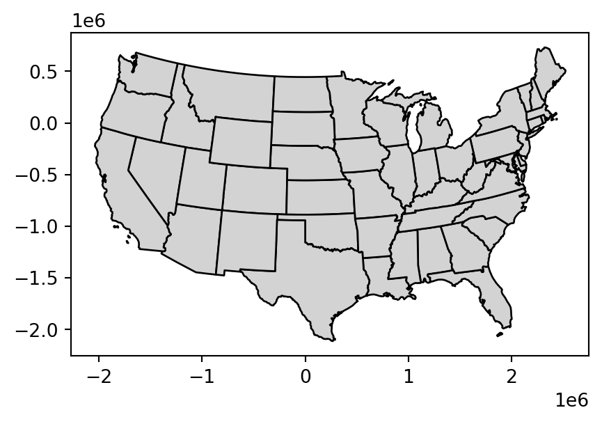
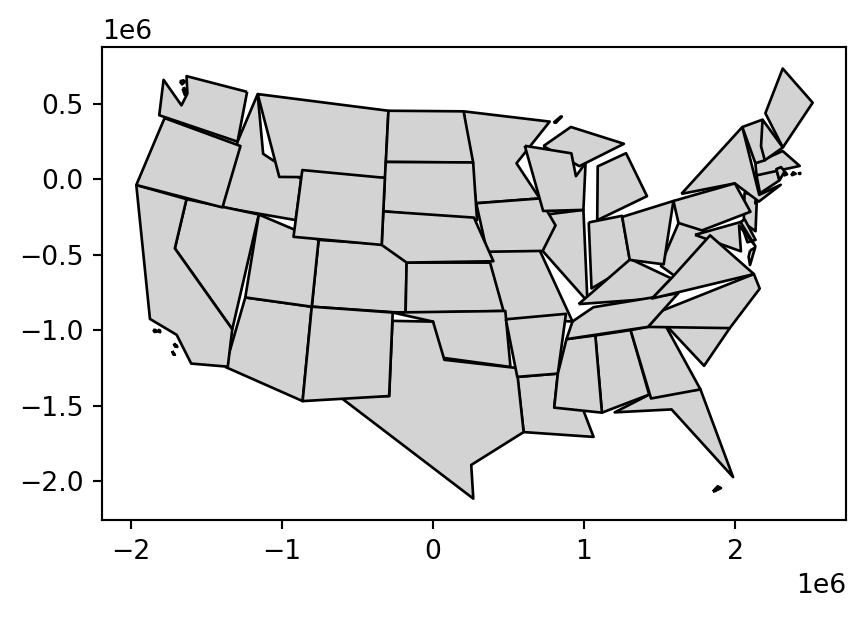
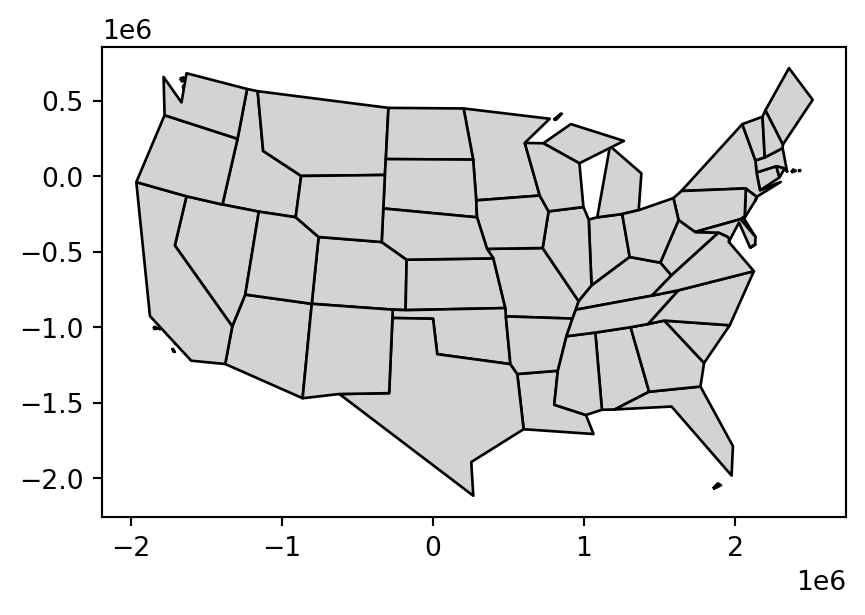
4.2.2 Centroids
Centroid operations identify the center of geographic objects. Like statistical measures of central tendency (including mean and median definitions of ‘average’), there are many ways to define the geographic center of an object. All of them create single point representations of more complex vector objects.
The most commonly used centroid operation is the geographic centroid. This type of centroid operation (often referred to as ‘the centroid’) represents the center of mass in a spatial object (think of balancing a plate on your finger). Geographic centroids have many uses, for example to create a simple point representation of complex geometries, to estimate distances between polygons, or to specify the location where polygon text labels are placed. Centroids of the geometries in a GeoSeries or a GeoDataFrame are accessible through the .centroid property, as demonstrated in the code below, which generates the geographic centroids of regions in New Zealand and tributaries to the River Seine (black points in Figure 4.3).
nz_centroid = nz.centroid
seine_centroid = seine.centroidSometimes the geographic centroid falls outside the boundaries of their parent objects (think of vector data in shape of a doughnut). In such cases ‘point on surface’ operations, created with the .representative_point method, can be used to guarantee the point will be in the parent object (e.g., for labeling irregular multipolygon objects such as island states), as illustrated by the red points in Figure 4.3. Notice that these red points always lie on their parent objects.
nz_pos = nz.representative_point()
seine_pos = seine.representative_point()The centroids and points in surface are illustrated in Figure 4.3.
# New Zealand
base = nz.plot(color='white', edgecolor='lightgrey')
nz_centroid.plot(ax=base, color='None', edgecolor='black')
nz_pos.plot(ax=base, color='None', edgecolor='red');
# Seine
base = seine.plot(color='grey')
seine_pos.plot(ax=base, color='None', edgecolor='red')
seine_centroid.plot(ax=base, color='None', edgecolor='black');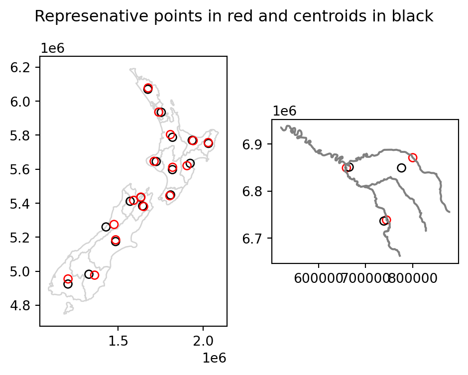
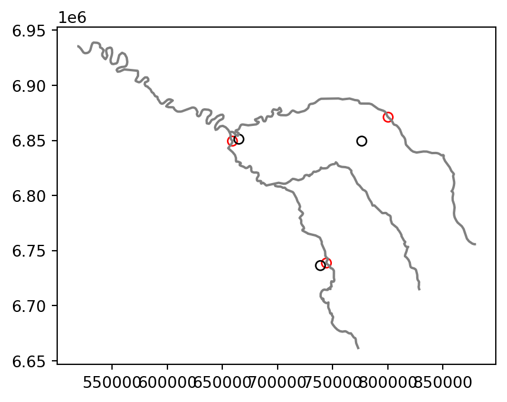
4.2.3 Buffers
Buffers are polygons representing the area within a given distance of a geometric feature: regardless of whether the input is a point, line or polygon, the output is a polygon (when using positive buffer distance). Unlike simplification, which is often used for visualization and reducing file size, buffering tends to be used for geographic data analysis. How many points are within a given distance of this line? Which demographic groups are within travel distance of this new shop? These kinds of questions can be answered and visualized by creating buffers around the geographic entities of interest.
Figure 4.4 illustrates buffers of two different sizes (5 and 50 \(km\)) surrounding the river Seine and tributaries. These buffers were created with commands below, using the .buffer method, applied to a GeoSeries or GeoDataFrame. The .buffer method requires one important argument: the buffer distance, provided in the units of the CRS, in this case, meters (Figure 4.4).
seine_buff_5km = seine.buffer(5000)
seine_buff_50km = seine.buffer(50000)
seine_buff_5km.plot(color='none', edgecolor=['c', 'm', 'y']);
seine_buff_50km.plot(color='none', edgecolor=['c', 'm', 'y']);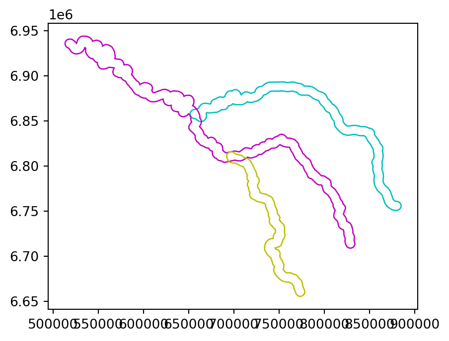
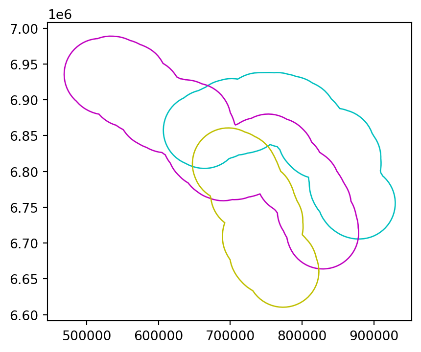
Note that both .centroid and .buffer return a GeoSeries object, even when the input is a GeoDataFrame.
seine_buff_5km0 POLYGON ((657550.332 6852587.97...
1 POLYGON ((517151.801 6930724.10...
2 POLYGON ((701519.740 6813075.49...
dtype: geometryIn the common scenario when the original attributes of the input features need to be retained, you can replace the existing geometry with the new GeoSeries by creating a copy of the original GeoDataFrame and assigning the new buffer GeoSeries to the geometry column.
seine_buff_5km = seine.copy()
seine_buff_5km.geometry = seine.buffer(5000)
seine_buff_5km| name | geometry | |
|---|---|---|
| 0 | Marne | POLYGON ((657550.332 6852587.97... |
| 1 | Seine | POLYGON ((517151.801 6930724.10... |
| 2 | Yonne | POLYGON ((701519.740 6813075.49... |
Alternative option is to add a secondary geometry column directly to the original GeoDataFrame.
seine['geometry_5km'] = seine.buffer(5000)
seine| name | geometry | geometry_5km | |
|---|---|---|---|
| 0 | Marne | MULTILINESTRING ((879955.277 67... | POLYGON ((657550.332 6852587.97... |
| 1 | Seine | MULTILINESTRING ((828893.615 67... | POLYGON ((517151.801 6930724.10... |
| 2 | Yonne | MULTILINESTRING ((773482.137 66... | POLYGON ((701519.740 6813075.49... |
You can then switch to either geometry column (i.e., make it the “active” geometry column) using .set_geometry, as in:
seine = seine.set_geometry('geometry_5km')Let’s revert to the original state of seine before moving on to the next section.
seine = seine.set_geometry('geometry')
seine = seine.drop('geometry_5km', axis=1)4.2.4 Affine transformations
Affine transformations include, among others, shifting (translation), scaling and rotation, or any combination of these. They preserves lines and parallelism, by angles and lengths are not necessarily preserved. These transformations are an essential part of geocomputation. For example, shifting is needed for labels placement, scaling is used in non-contiguous area cartograms, and many affine transformations are applied when reprojecting or improving the geometry that was created based on a distorted or wrongly projected map.
The geopandas package implements affine transformation, for objects of classes GeoSeries and GeoDataFrame. In both cases, the method is applied on the GeoSeries part, returning a new GeoSeries of transformed geometries.
Affine transformations of GeoSeries can be done using the .affine_transform method, which is a wrapper around the shapely.affinity.affine_transform function. As documented, a 2D affine transformation requires a six-parameter list [a,b,d,e,xoff,yoff] which represents the following equations for transforming the coordinates (Equation 4.1 and Equation 4.2)/
\[ x' = a x + b y + x_\mathrm{off} \tag{4.1}\]
\[ y' = d x + e y + y_\mathrm{off} \tag{4.2}\]
There are also simplified GeoSeries methods for specific scenarios, such as:
.translate(xoff=0.0, yoff=0.0, zoff=0.0).scale(xfact=1.0, yfact=1.0, zfact=1.0, origin='center').rotate(angle, origin='center', use_radians=False).skew(angle, origin='center', use_radians=False)
For example, shifting only requires the \(x_{off}\) and \(y_{off}\), using .translate. The code below shifts the y-coordinates of nz by 100 \(km\) to the north, but leaves the x-coordinates untouched.
nz_shift = nz.translate(0, 100000)Scaling enlarges or shrinks objects by a factor, and can be applied either globally or locally. Global scaling increases or decreases all coordinates values in relation to the origin coordinates, while keeping all geometries topological relations intact. geopandas implements local scaling using the .scale method. Local scaling treats geometries independently and requires points around which geometries are going to be scaled, e.g., centroids. In the example below, each geometry is shrunk by a factor of two around the centroids (Figure 4.5 (b)). To achieve that, we pass the 0.5 and 0.5 scaling factors (for x and y, respectively), and the 'centroid' option for the point of origin. (Other than 'centroid', it is possible to use 'center', for the bounding box center, or specific point coordinates.)
nz_scale = nz.scale(0.5, 0.5, origin='centroid')Rotating the geometries can be done using the .rotate method. When rotating, we need to specify the rotation angle (positive values imply clockwise rotation) and the origin points (using the same options as in scale). For example, the following expression rotates nz by 30 degrees counter-clockwise, around the geometry centroids.
nz_rotate = nz.rotate(-30, origin='centroid')Figure 4.5 shows the original layer nz, and the shifting, scaling and rotation results.
# Shift
base = nz.plot(color='lightgrey', edgecolor='darkgrey')
nz_shift.plot(ax=base, color='red', edgecolor='darkgrey');
# Scale
base = nz.plot(color='lightgrey', edgecolor='darkgrey')
nz_scale.plot(ax=base, color='red', edgecolor='darkgrey');
# Rotate
base = nz.plot(color='lightgrey', edgecolor='darkgrey')
nz_rotate.plot(ax=base, color='red', edgecolor='darkgrey');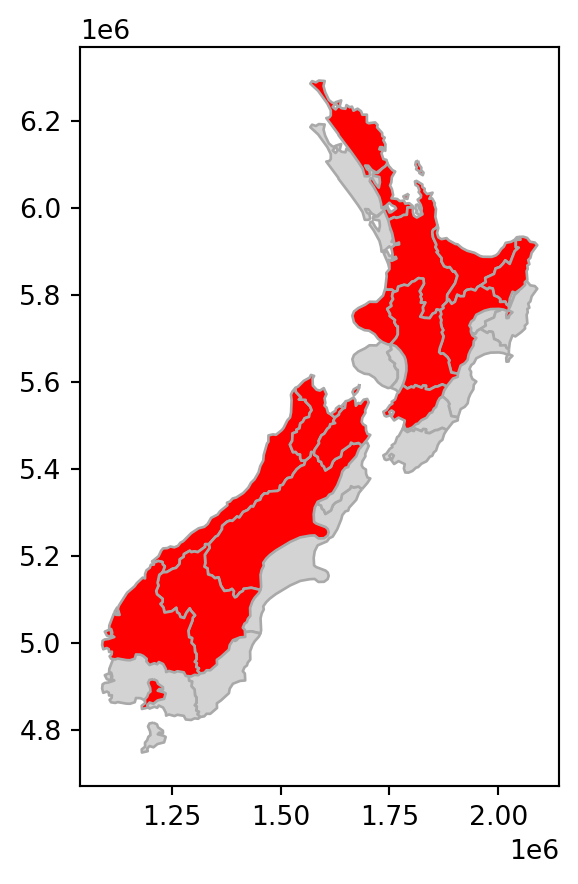

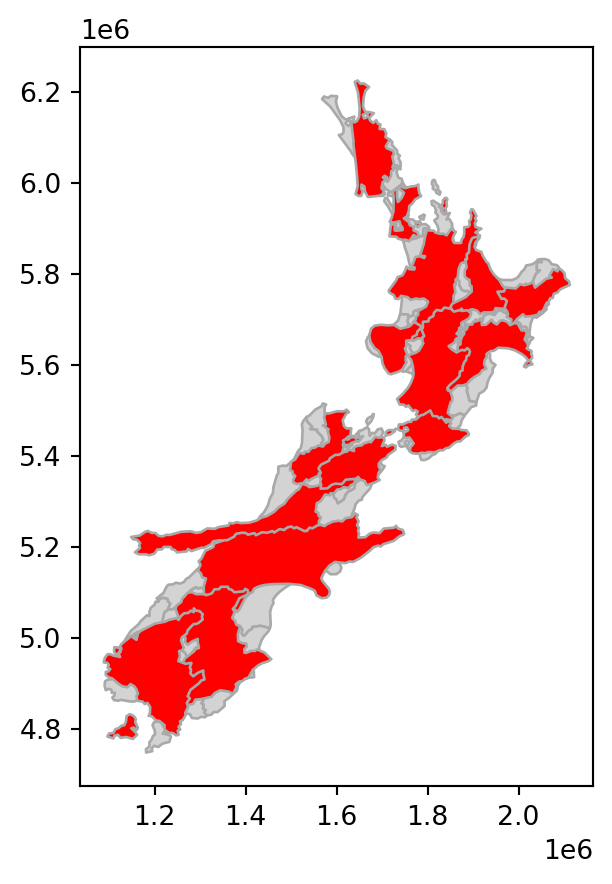
4.2.5 Pairwise geometry-generating operations
Spatial clipping is a form of spatial subsetting that involves changes to the geometry columns of at least some of the affected features. Clipping can only apply to features more complex than points: lines, polygons and their ‘multi’ equivalents. To illustrate the concept we will start with a simple example: two overlapping circles with a center point one unit away from each other and a radius of one (Figure 4.6).
x = shapely.Point((0, 0)).buffer(1)
y = shapely.Point((1, 0)).buffer(1)
shapely.GeometryCollection([x, y])
x and yImagine you want to select not one circle or the other, but the space covered by both x and y. This can be done using the .intersection method from shapely, illustrated using objects named x and y which represent the left- and right-hand circles (Figure 4.7).
x.intersection(y)x and yMore generally, clipping is an example of a ‘pairwise geometry-generating operation’, where new geometries are generated from two inputs. Other than .intersection (Figure 4.7), there are three other standard pairwise operators: .difference (Figure 4.8), .union (Figure 4.9), and .symmetric_difference (Figure 4.10).
x.difference(y)x and y (namely, x “minus” y)x.union(y)
x and yx.symmetric_difference(y)
x and yKeep in mind that x and y are interchangeable in all predicates except for .difference, where x.difference(y) means x minus y, whereas y.difference(x) means y minus x.
The latter examples demonstrate pairwise operations between individual shapely geometries. The geopandas package, as is often the case, contains wrappers of these shapely functions to be applied to multiple, or pairwise, use cases. For example, applying either of the pairwise methods on a GeoSeries or GeoDataFrame, combined with a shapely geometry, returns the pairwise (many-to-one) results (which is analogous to other operators, like .intersects or .distance, see Section 3.2.1 and Section 3.2.7, respectively).
Let’s demonstrate the “many-to-one” scenario by calculating the difference between each geometry in a GeoSeries and a “fixed” shapely geometry. To create the latter, let’s take x and combine it with itself translated (Section 4.2.4) to a distance of 1 and 2 units “upwards” on the y-axis.
geom1 = gpd.GeoSeries([x])
geom2 = geom1.translate(0, 1)
geom3 = geom1.translate(0, 2)
geom = pd.concat([geom1, geom2, geom3])
geom0 POLYGON ((1.00000 0.00000, 0.99...
0 POLYGON ((1.00000 1.00000, 0.99...
0 POLYGON ((1.00000 2.00000, 0.99...
dtype: geometryFigure 4.11 shows the GeoSeries geom with the shapely geometry (in red) that we will intersect with it.
fig, ax = plt.subplots()
geom.plot(color='lightgrey', edgecolor='black', ax=ax)
gpd.GeoSeries(y).plot(color='#FF000040', edgecolor='black', ax=ax);
GeoSeries with three circles, and a shapely geometry that we will “subtract” from it (in red)Now, using .intersection automatically applies the shapely method of the same name on each geometry in geom, returning a new GeoSeries, which we name geom_inter_y, with the pairwise “intersections”. Note the empty third geometry (can you explain the meaning of this result?).
geom_inter_y = geom.intersection(y)
geom_inter_y0 POLYGON ((0.99518 -0.09802, 0.9...
0 POLYGON ((0.99518 0.90198, 0.98...
0 POLYGON EMPTY
dtype: geometryFigure 4.12 is a plot of the result geom_inter_y.
geom_inter_y.plot(color='lightgrey', edgecolor='black');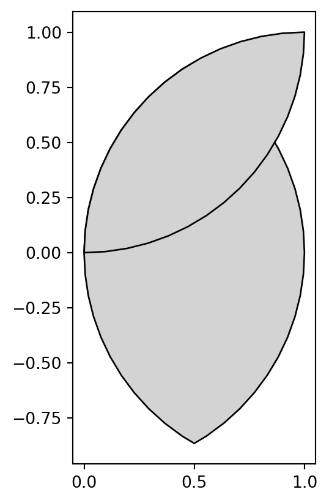
GeoSeries, after subtracting a shapely geometry using .intersectionThe .overlay method (see Section 3.2.6) further extends this technique, making it possible to apply “many-to-many” pairwise geometry generations between all pairs of two GeoDataFrames. The output is a new GeoDataFrame with the pairwise outputs, plus the attributes of both inputs which were the inputs of the particular pairwise output geometry. See the “Set operations with overlay” article in the geopandas documentation for examples of .overlay.
4.2.6 Subsetting vs. clipping
In the last two chapters we have introduced two types of spatial operators: boolean, such as .intersects (Section 3.2.1), and geometry-generating, such as .intersection (Section 4.2.5). Here, we illustrate the difference between them. We do this using the specific scenario of subsetting points by polygons, where (unlike in other cases) both methods can be used for the same purpose and giving the same result.
To illustrate the point, we will subset points that cover the bounding box of the circles x and y from Figure 4.6. Some points will be inside just one circle, some will be inside both and some will be inside neither. The following code sections generates the sample data for this section, a simple random distribution of points within the extent of circles x and y, resulting in output illustrated in Figure 4.13. We create the sample points in two steps. First, we figure out the bounds where random points are to be generated.
bounds = x.union(y).bounds
bounds(-1.0, -1.0, 2.0, 1.0)Second, we use np.random.uniform to calculate n random x- and y-coordinates within the given bounds.
np.random.seed(1)
n = 10
coords_x = np.random.uniform(bounds[0], bounds[2], n)
coords_y = np.random.uniform(bounds[1], bounds[3], n)
coords = list(zip(coords_x, coords_y))
coords[(0.2510660141077219, -0.1616109711934104),
(1.1609734803264744, 0.370439000793519),
(-0.9996568755479653, -0.5910955005369651),
(-0.0930022821044807, 0.7562348727818908),
(-0.5597323275486609, -0.9452248136041477),
(-0.7229842156936066, 0.34093502035680445),
(-0.4412193658669873, -0.16539039526574606),
(0.03668218112914312, 0.11737965689150331),
(0.1903024226920098, -0.7192261228095325),
(0.6164502020100708, -0.6037970218302424)]Third, we transform the list of coordinates into a list of shapely points and then to a GeoSeries.
pnt = [shapely.Point(i) for i in coords]
pnt = gpd.GeoSeries(pnt)The result pnt, which x and y circles in the background, is shown in Figure 4.13.
base = pnt.plot(color='none', edgecolor='black')
gpd.GeoSeries([x]).plot(ax=base, color='none', edgecolor='darkgrey');
gpd.GeoSeries([y]).plot(ax=base, color='none', edgecolor='darkgrey');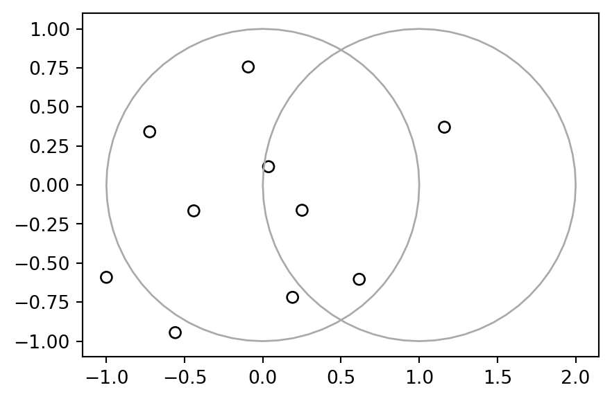
Now, we can get back to our question: how to subset the points to only return the point that intersects with both x and y? The code chunks below demonstrate two ways to achieve the same result. In the first approach, we can calculate a boolean Series, evaluating whether each point of pnt intersects with the intersection of x and y (see Section 3.2.1) and then use it to subset pnt to get the result pnt1.
sel = pnt.intersects(x.intersection(y))
pnt1 = pnt[sel]
pnt10 POINT (0.25107 -0.16161)
7 POINT (0.03668 0.11738)
9 POINT (0.61645 -0.60380)
dtype: geometryIn the second approach, we can also find the intersection between the input points represented by pnt, using the intersection of x and y as the subsetting/clipping object. Since the second argument is an individual shapely geometry (x.intersection(y)), we get “pairwise” intersections of each pnt with it (see Section 4.2.5):
pnt2 = pnt.intersection(x.intersection(y))
pnt20 POINT (0.25107 -0.16161)
1 POINT EMPTY
2 POINT EMPTY
...
7 POINT (0.03668 0.11738)
8 POINT EMPTY
9 POINT (0.61645 -0.60380)
Length: 10, dtype: geometryThe subset pnt2 is shown in Figure 4.14.
base = pnt.plot(color='none', edgecolor='black')
gpd.GeoSeries([x]).plot(ax=base, color='none', edgecolor='darkgrey');
gpd.GeoSeries([y]).plot(ax=base, color='none', edgecolor='darkgrey');
pnt2.plot(ax=base, color='red');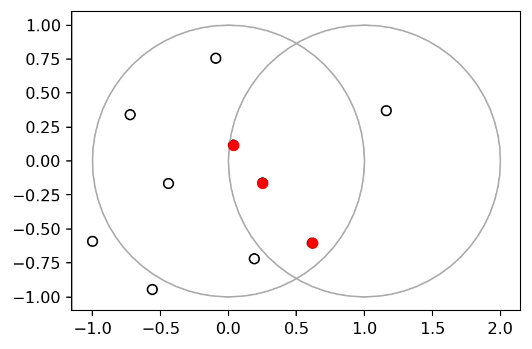
The only difference between the two approaches is that .intersection returns all “intersections”, even if they are empty. When these are filtered out, pnt2 becomes identical to pnt1:
pnt2 = pnt2[~pnt2.is_empty]
pnt20 POINT (0.25107 -0.16161)
7 POINT (0.03668 0.11738)
9 POINT (0.61645 -0.60380)
dtype: geometryThe example above is rather contrived and provided for educational rather than applied purposes. However, we encourage the reader to reproduce the results to deepen your understanding for handling geographic vector objects in Python as it raises an important question: which implementation to use? Generally, more concise implementations should be favored, meaning the first approach above.
4.2.7 Geometry unions
Spatial aggregation can silently dissolve the geometries of touching polygons in the same group, as we saw in Section 2.2.2. This is demonstrated in the code chunk below, in which 49 us_states are aggregated into 4 regions using the .dissolve method.
regions = us_states[['REGION', 'geometry', 'total_pop_15']] \
.dissolve(by='REGION', aggfunc='sum').reset_index()
regions| REGION | geometry | total_pop_15 | |
|---|---|---|---|
| 0 | Midwest | MULTIPOLYGON (((-89.10077 36.94... | 67546398.0 |
| 1 | Norteast | MULTIPOLYGON (((-75.61724 39.83... | 55989520.0 |
| 2 | South | MULTIPOLYGON (((-81.38550 30.27... | 118575377.0 |
| 3 | West | MULTIPOLYGON (((-118.36998 32.8... | 72264052.0 |
Figure 4.15 compares the original us_states layer with the aggregated regions layer.
# States
fig, ax = plt.subplots(figsize=(9, 2.5))
us_states.plot(ax=ax, edgecolor='black', column='total_pop_15', legend=True);
# Regions
fig, ax = plt.subplots(figsize=(9, 2.5))
regions.plot(ax=ax, edgecolor='black', column='total_pop_15', legend=True);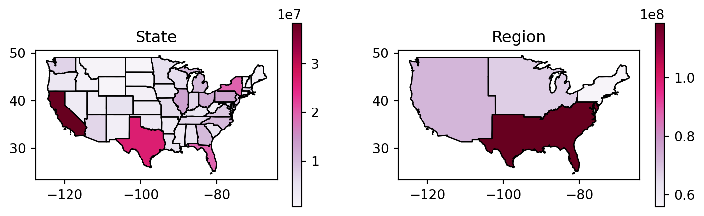
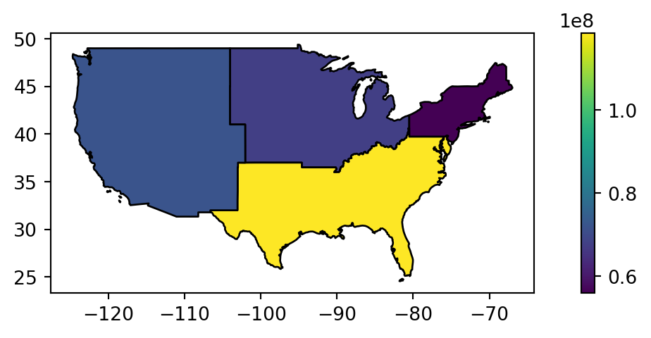
What is happening with the geometries here? Behind the scenes, .dissolve combines the geometries and dissolve the boundaries between them using the .unary_union method per group. This is demonstrated in the code chunk below which creates a united western US using the standalone unary_union operation. Note that the result is a shapely geometry, as the individual attributes are “lost” as part of dissolving (Figure 4.16).
us_west = us_states[us_states['REGION'] == 'West']
us_west_union = us_west.geometry.unary_union
us_west_union
To dissolve two (or more) groups of a GeoDataFrame into one geometry, we can either (a) use a combined condition or (b) concatenate the two separate subsets and then dissove using .unary_union.
# Approach 1
sel = (us_states['REGION'] == 'West') | (us_states['NAME'] == 'Texas')
texas_union = us_states[sel]
texas_union = texas_union.geometry.unary_union
# Approach 2
us_west = us_states[us_states['REGION'] == 'West']
texas = us_states[us_states['NAME'] == 'Texas']
texas_union = pd.concat([us_west, texas]).unary_unionThe result is identical in both cases, shown in Figure 4.17.
texas_union
4.2.8 Type transformations
Transformation of geometries, from one type to another, also known as “geometry casting”, is often required to facilitate spatial analysis. Either the geopandas or the shapely packages can be used for geometry casting, depending on the type of transformation. The exact expression(s) depend on the specific transformation we are interested in. In general, you need to figure out the required input of the respective construstor function according to the “destination” geometry (e.g., shapely.LineString, etc.), then reshape the input of the “source” geometry into the right form to be passed to that function. Or, when available, you can use a wrapper from geopandas.
Let’s create a 'MultiPoint' to illustrate how geometry casting works on shapely geometry objects (Figure 4.18).
multipoint = shapely.MultiPoint([(1,1), (3,3), (5,1)])
multipoint
'MultiPoint' geometry used to demonstrate shapely type transformationsA 'LineString' can be created using shapely.LineString from a list of points. Thus, a 'MultiPoint' can be converted to a 'LineString' by extracting the individual points into a list, then passing them to shapely.LineString (Figure 4.19).
linestring = shapely.LineString(list(multipoint.geoms))
linestring
'LineString' created from the 'MultiPoint' in Figure 4.18Similarly, a 'Polygon' can be created using function shapely.Polygon, which accepts a sequence of point coordinates. In principle, the last coordinate must be equal to the first, in order to form a closed shape. However, shapely.Polygon is able to complete the last coordinate automatically, and therefore we can pass all of the coordinates of the 'MultiPoint' directly to shapely.Polygon (Figure 4.20).
polygon = shapely.Polygon([[p.x, p.y] for p in multipoint.geoms])
polygon
'Polygon' created from the 'MultiPoint' in Figure 4.18The source 'MultiPoint' geometry, and the derived 'LineString' and 'Polygon' geometries are shown in Figure 4.21. Note that we convert the shapely geometries to GeoSeries to use the geopandas plotting method.
gpd.GeoSeries(multipoint).plot();
gpd.GeoSeries(linestring).plot();
gpd.GeoSeries(polygon).plot();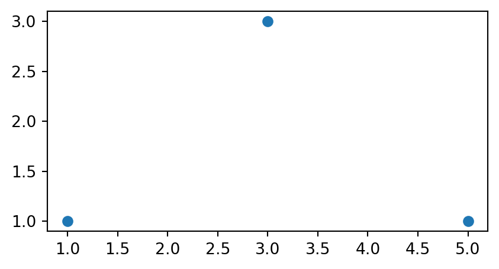
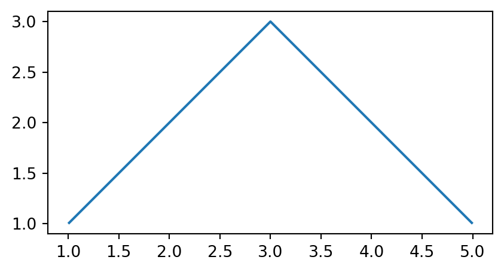
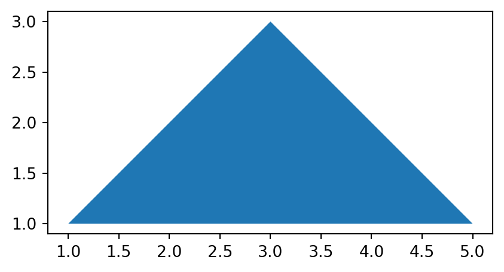
'LineString’ and 'Polygon' casted from a 'MultiPoint' geometryConversion from 'MultiPoint' to 'LineString' (Figure 4.19) is a common operation that creates a line object from ordered point observations, such as GPS measurements or geotagged media. This allows spatial operations such as the length of the path traveled. Conversion from 'MultiPoint' or 'LineString' to 'Polygon' (fig-type-transform-polygon) is often used to calculate an area, for example from the set of GPS measurements taken around a lake or from the corners of a building lot.
Our 'LineString' geometry can be converted back to a 'MultiPoint' geometry by passing its coordinates directly to shapely.MultiPoint (Figure 4.22).
shapely.MultiPoint(linestring.coords)
'MultiPoint' created from the 'LineString' in Figure 4.19A 'Polygon' (exterior) coordinates can be passed to shapely.MultiPoint, to go back to a 'MultiPoint' geometry, as well (Figure 4.23).
shapely.MultiPoint(polygon.exterior.coords)
'MultiPoint' created from the 'Polygon' in Figure 4.20Using these methods, we can transform between 'Point', 'LineString', and 'Polygon' geometries, assuming there is a sufficient number of points (at least two to form a line, and at least three to form a polygon). When dealing with multi-part geometries using shapely, we can:
- Access single-part geometries (e.g., each
'Polygion'in a'MultiPolygon'geometry) using.geoms[i], whereiis the index of the geometry - Combine single-part geometries into a multi-part geometry, by passing a
listof the latter to the constructor function
For example, here is how we combine two 'Polygon' geometries into a 'MultiPolygon' (while also using a shapely affine function shapely.affinity.translate, which is underlying the geopandas .translate method used earlier, see Section 4.2.4) (Figure 4.24):
multipolygon = shapely.MultiPolygon([
polygon,
shapely.affinity.translate(polygon.centroid.buffer(1.5), 3, 2)
])
multipolygon
'MultiPolygon' created from the 'Polygon' in Figure 4.20 and another polygonand here is how we can get back the 'Polygon' parts:
multipolygon.geoms[0]
'MultiPolygon' in Figure 4.24multipolygon.geoms[1]
'MultiPolygon' in Figure 4.24However, dealing with multi-part geometries is easier with geopandas, since that way we can keep track of the associated attributes: duplicating them when going from multi-part to single-part (using .explode, see below), or collapsing them through aggregation when going from single-part to multi-part (using .dissolve, see Section 4.2.7).
Let’s apply another commonly used type transformation to demonstrate. As input, we will create a 'MultiLineString' geometry composed of three lines (Figure 4.27).
l1 = shapely.LineString([(1, 5), (4, 3)])
l2 = shapely.LineString([(4, 4), (4, 1)])
l3 = shapely.LineString([(2, 2), (4, 2)])
ml = shapely.MultiLineString([l1, l2, l3])
ml
'MultiLineString' geometry composed of three linesLet’s place it into a GeoSeries.
geom = gpd.GeoSeries([ml])
geom0 MULTILINESTRING ((1.00000 5.000...
dtype: geometryThen, put it into a GeoDataFrame with an attribute called 'id':
dat = gpd.GeoDataFrame(geometry=geom, data=pd.DataFrame({'id': [1]}))
dat| id | geometry | |
|---|---|---|
| 0 | 1 | MULTILINESTRING ((1.00000 5.000... |
You can imagine it as a road or river network. The above layer dat has only one row that defines all the lines. This restricts the number of operations that can be done, for example it prevents adding names to each line segment or calculating lengths of single lines. Using shapely methods with which we are already familiar with (see above), the individual single-part geometries (i.e., the “parts”) can be accessed through the .geoms property.
list(ml.geoms)[<LINESTRING (1 5, 4 3)>, <LINESTRING (4 4, 4 1)>, <LINESTRING (2 2, 4 2)>]However, specifically for the “multi-part to single part” type transformation scenarios, there is also a method called .explode, which can convert an entire multi-part GeoDataFrame to a single-part one. The advantage is that the original attributes (such as id) are retained, so that we can keep track of the original multi-part geometry properties that each part came from. The index_parts=True argument also lets us keep track of the original multipart geometry indices, and part indices, named level_0 and level_1, respectively.
dat1 = dat.explode(index_parts=True).reset_index()
dat1| level_0 | level_1 | id | geometry | |
|---|---|---|---|---|
| 0 | 0 | 0 | 1 | LINESTRING (1.00000 5.00000, 4.... |
| 1 | 0 | 1 | 1 | LINESTRING (4.00000 4.00000, 4.... |
| 2 | 0 | 2 | 1 | LINESTRING (2.00000 2.00000, 4.... |
For example, here we see that all 'LineString' geometries came from the same multi-part geometry (level_0=0), which had three parts (level_1=0,1,2). Figure 4.28 demonstrates the effect of .explode in converting a layer with multi-part geometries into a layer with single part geometries.
dat.plot(column='id');
dat1.plot(column='level_1');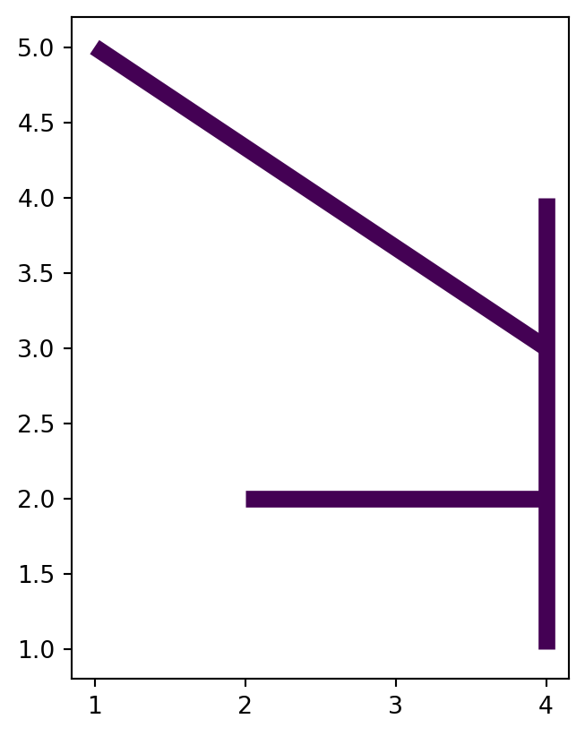

.explode'MultiLineString' layer with one feature, into a 'LineString' layer with three features, using .explodeThe opposite transformation, i.e., “single-part to multi-part”, is achieved using the .dissolve method (which we are already familiar with, see Section 4.2.7). For example, here is how we can get back to the 'MultiLineString' geometry:
dat1.dissolve(by='id').reset_index()| id | geometry | level_0 | level_1 | |
|---|---|---|---|---|
| 0 | 1 | MULTILINESTRING ((1.00000 5.000... | 0 | 0 |
The next code chunk is another example, dissolving the nz north and south parts into 'MultiPolygon' geometries.
nz_dis1 = nz[['Island', 'Population', 'geometry']] \
.dissolve(by='Island', aggfunc='sum') \
.reset_index()
nz_dis1| Island | geometry | Population | |
|---|---|---|---|
| 0 | North | MULTIPOLYGON (((1865558.829 546... | 3671600.0 |
| 1 | South | MULTIPOLYGON (((1229729.735 479... | 1115600.0 |
Note that .dissolve not only combines single-part into multi-part geometries, but also dissolves any internal borders. So, in fact, the result may be single-part (in case when all parts touch each other, unlike in nz). If, for some reason, we want to combine geometries into multi-part without dissolving, we can fall back to the pandas .agg method (custom table aggregation), supplemented with a shapely function specifying how exactly we want to transform each group of geometries into a new single geometry. In the following example, for instance, we collect all 'Polygon' and 'MultiPolygon' parts of nz into a single 'MultiPolygon' geometry with many separate parts (i.e., without dissolving), per group (Island).
nz_dis2 = nz \
.groupby('Island') \
.agg({
'Population': 'sum',
'geometry': lambda x: shapely.MultiPolygon(x.explode().to_list())
}) \
.reset_index()
nz_dis2 = gpd.GeoDataFrame(nz_dis2).set_geometry('geometry').set_crs(nz.crs)
nz_dis2| Island | Population | geometry | |
|---|---|---|---|
| 0 | North | 3671600.0 | MULTIPOLYGON (((1745493.196 600... |
| 1 | South | 1115600.0 | MULTIPOLYGON (((1557042.169 531... |
The difference between the last two results (with and without dissolving, respectively) is not evident in the printout: in both cases we got a layer with two features of type 'MultiPolygon'. However, in the first case internal borders were dissolved, while in the second case they were not. This is illustrated in Figure 4.29:
nz_dis1.plot(color='lightgrey', edgecolor='black');
nz_dis2.plot(color='lightgrey', edgecolor='black');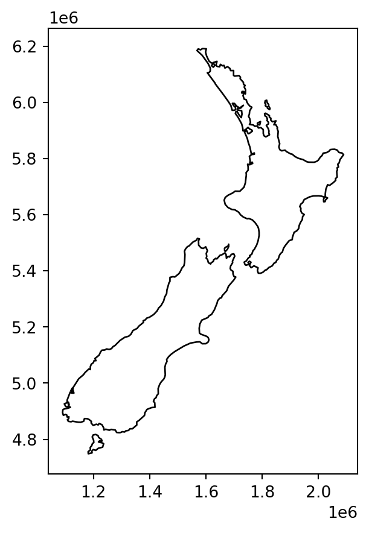
.dissolve method)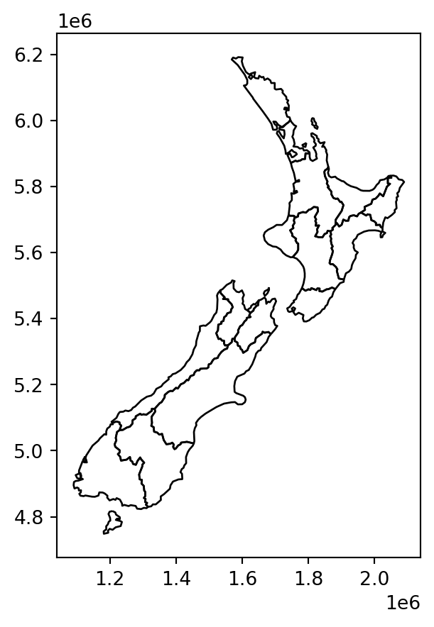
.agg and a custom shapely-based function)4.3 Geometric operations on raster data
4.3.1 Geometric intersections
In Section 3.3.1 we have shown how to extract values from a raster overlaid by coordinates or by a matching boolean mask. A different case is when the area of interest is defined by any general (possibly non-matching) raster B, to retrieve a spatial output of a (smaller) subset of raster A we can:
- Extract the bounding box polygon of B (hereby,
clip) - Mask and crop A (hereby,
elev.tif) using B (Section 5.2)
For example, suppose that we want to get a subset of the elev.tif raster using another, smaller, raster. To demonstrate this, let’s create (see Section 1.3.2) that smaller raster, hereby named clip. First, we need to create a \(3 \times 3\) array of raster values.
clip = np.array([1] * 9).reshape(3, 3)
cliparray([[1, 1, 1],
[1, 1, 1],
[1, 1, 1]])Then, we define the transformation matrix, in such a way that clip intersects with elev.tif (Figure 4.31).
new_transform = rasterio.transform.from_origin(
west=0.9,
north=0.45,
xsize=0.3,
ysize=0.3
)
new_transformAffine(0.3, 0.0, 0.9,
0.0, -0.3, 0.45)Now, for subsetting, we will derive a shapely geometry representing the clip raster extent, using rasterio.transform.array_bounds.
bbox = rasterio.transform.array_bounds(
clip.shape[1], # columns
clip.shape[0], # rows
new_transform
)
bbox(0.9, -0.4499999999999999, 1.7999999999999998, 0.45)The four numeric values can be transformed into a rectangular shapely geometry using shapely.box (Figure 4.30).
bbox = shapely.box(*bbox)
bbox
shapely geometry derived from a clipping raster bounding box coordinates, a preliminary step for geometric intersection between two rastersFigure 4.31 shows the alignment of bbox and elev.tif.
fig, ax = plt.subplots()
rasterio.plot.show(src_elev, ax=ax)
gpd.GeoSeries([bbox]).plot(color='none', ax=ax);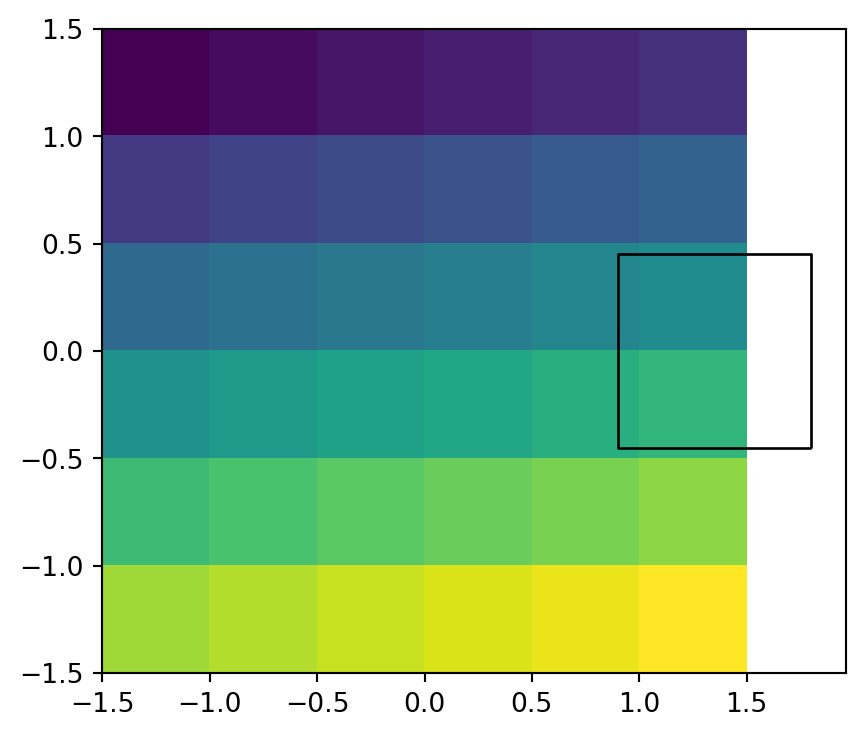
elev.tif raster, and the extent of another (smaller) raster clip which we use to subset itFrom here on, subsetting can be done using masking and cropping, just like with any vector layer other than bbox, regardless whether it is rectangular or not. We elaborate on masking and cropping in Section 5.2 (check that section for details about rasterio.mask.mask), but, for completeness, here is the code for the last step of masking and cropping:
out_image, out_transform = rasterio.mask.mask(
src_elev,
[bbox],
crop=True,
all_touched=True,
nodata=0
)The resulting subset array out_image contains all pixels intersecting with clip pixels (not necessarily with the centroids!). However, due to the all_touched=True argument, those pixels which intersect with clip, but their centroid does not, retain their original values (e.g., 17, 23) rather than turned into “No Data” (e.g., 0).
out_imagearray([[[17, 18],
[23, 24]]], dtype=uint8)Therefore, in our case, subset out_image dimensions are \(2 \times 2\) (Figure 4.32; also see Figure 4.31).
fig, ax = plt.subplots()
rasterio.plot.show(out_image, transform=out_transform, ax=ax)
gpd.GeoSeries([bbox]).plot(color='none', ax=ax);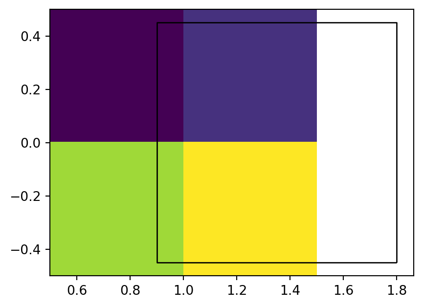
elev.tif raster4.3.2 Extent and origin
When merging or performing map algebra on rasters, their resolution, projection, origin and/or extent have to match. Otherwise, how should we add the values of one raster with a resolution of 0.2 decimal degrees to a second raster with a resolution of 1 decimal degree? The same problem arises when we would like to merge satellite imagery from different sensors with different projections and resolutions. We can deal with such mismatches by aligning the rasters. Typically, raster alignment is done through resampling—that way, it is guaranteed that the rasters match exactly (Section 4.3.4). However, sometimes it can be useful to modify raster placement and extent “manually”, by adding or removing rows and columns, or by modifying the origin, that is, slightly shifting the raster. Sometimes, there are reasons other than alignment with a second raster for manually modifying raster extent and placement. For example, it may be useful to add extra rows and columns to a raster prior to focal operations, so that it is easier to operate on the edges.
Let’s demostrate the first operation, raster padding. First, we will read the array with the elev.tif values:
r = src_elev.read(1)
rarray([[ 1, 2, 3, 4, 5, 6],
[ 7, 8, 9, 10, 11, 12],
[13, 14, 15, 16, 17, 18],
[19, 20, 21, 22, 23, 24],
[25, 26, 27, 28, 29, 30],
[31, 32, 33, 34, 35, 36]], dtype=uint8)To pad an ndarray, we can use the np.pad function. The function accepts an array, and a tuple of the form ((rows_top,rows_bottom),(columns_left, columns_right)). Also, we can specify the value that’s being used for padding with constant_values (e.g., 18). For example, here we pad r with one extra row and two extra columns, on both sides:
rows = 1
cols = 2
s = np.pad(r, ((rows,rows),(cols,cols)), constant_values=18)
sarray([[18, 18, 18, 18, 18, 18, 18, 18, 18, 18],
[18, 18, 1, 2, 3, 4, 5, 6, 18, 18],
[18, 18, 7, 8, 9, 10, 11, 12, 18, 18],
[18, 18, 13, 14, 15, 16, 17, 18, 18, 18],
[18, 18, 19, 20, 21, 22, 23, 24, 18, 18],
[18, 18, 25, 26, 27, 28, 29, 30, 18, 18],
[18, 18, 31, 32, 33, 34, 35, 36, 18, 18],
[18, 18, 18, 18, 18, 18, 18, 18, 18, 18]], dtype=uint8)However, for s to be used in spatial operations, we also have to update its transformation matrix. Whenever we add extra columns on the left, or extra rows on top, the raster origin changes. To reflect this fact, we have to take to “original” origin and add the required multiple of pixel widths or heights (i.e., raster resolution steps). The transformation matrix of a raster is accessible from the raster file metadata (Section 1.3.2) or, as a shortcut, through the .transform property of the raster file connection. For example, the next code chunk shows the transformation matrix of elev.tif.
src_elev.transform Affine(0.5, 0.0, -1.5,
0.0, -0.5, 1.5)From the transformation matrix, we are able to extract the origin.
xmin, ymax = src_elev.transform[2], src_elev.transform[5]
xmin, ymax(-1.5, 1.5)We can also get the resolution of the data, which is the distance between two adjacent pixels.
dx, dy = src_elev.transform[0], src_elev.transform[4]
dx, dy(0.5, -0.5)These two parts of information are enough to calculate the new origin (xmin_new,ymax_new) of the padded raster.
xmin_new = xmin - dx * cols
ymax_new = ymax - dy * rows
xmin_new, ymax_new(-2.5, 2.0)Using the updated origin, we can update the transformation matrix (Section 1.3.2). Keep in mind that the meaning of the last two arguments is xsize, ysize, so we need to pass the absolute value of dy (since it is negative).
new_transform = rasterio.transform.from_origin(
west=xmin_new,
north=ymax_new,
xsize=dx,
ysize=abs(dy)
)
new_transformAffine(0.5, 0.0, -2.5,
0.0, -0.5, 2.0)Figure 4.33 shows the padded raster, with the outline of the original elev.tif (in red), demonstrating that the origin was shifted correctly and the new_transform works fine.
fig, ax = plt.subplots()
rasterio.plot.show(s, transform=new_transform, cmap='Greys', ax=ax)
elev_bbox = gpd.GeoSeries(shapely.box(*src_elev.bounds))
elev_bbox.plot(color='none', edgecolor='red', ax=ax);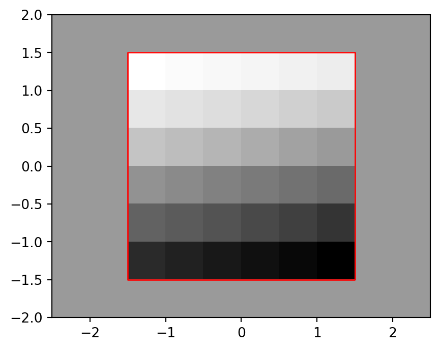
elev.tif raster, and the extent of the original elev.tif raster (in red)We can shift a raster origin not just when padding, but in any other use case, just by changing its transformation matrix. The effect is that the raster is going to be shifted (which is analogous to .translate for shifting a vector layer, see Section 4.2.4). Manually shifting a raster to arbitrary distance is rarely needed in real-life scenarios, but it is useful to know how to do it at least for better understanding the concept of raster origin. As an example, let’s shift the origin of elev.tif by (-0.25,0.25). First, we need to calculate the new origin.
xmin_new = xmin - 0.25 # shift xmin to the left
ymax_new = ymax + 0.25 # shift ymax upwards
xmin_new, ymax_new(-1.75, 1.75)To shift the origin in other directions we should change the two operators (-, +) accordingly.
Then, same as when padding (see above), we create an updated transformation matrix.
new_transform = rasterio.transform.from_origin(
west=xmin_new,
north=ymax_new,
xsize=dx,
ysize=abs(dy)
)
new_transformAffine(0.5, 0.0, -1.75,
0.0, -0.5, 1.75)Figure 4.34 shows the shifted raster and the outline of the original elev.tif raster (in red).
fig, ax = plt.subplots()
rasterio.plot.show(r, transform=new_transform, cmap='Greys', ax=ax)
elev_bbox.plot(color='none', edgecolor='red', ax=ax);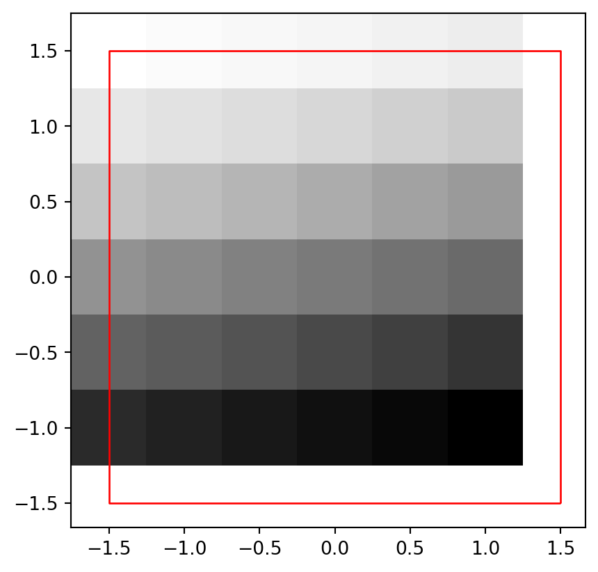
elev.tif raster (Figure 4.33) further shifted by (0.25,0.25), and the extent of the original elev.tif raster (in red)4.3.3 Aggregation and disaggregation
Raster datasets vary based on their resolution, from high resolution datasets that enable individual trees to be seen, to low resolution datasets covering large swaths of the Earth. Raster datasets can be transformed to either decrease (aggregate) or increase (disaggregate) their resolution, for a number of reasons. For example, aggregation can be used to reduce computational resource requirements of raster storage and subsequent steps, while disaggregation can be used to match other datasets, or to add detail. As an example, we here change the spatial resolution of dem.tif by a factor of 5 (Figure 4.35).
Raster aggregation is, in fact, a special case of raster resampling (see Section 4.3.4), where the target raster grid is aligned with the original raster, only with coarser pixels. Conversely, raster resampling is the general case where the new grid is not necessarily an aggregation of the original one, but any other type of grid (such as a rotated and/or shifted one, etc.).
To aggregate a raster using rasterio, we go through two steps:
- Reading the raster values (using
.read) into anout_shapethat is different from the original.shape - Updating the
transformaccording toout_shape
Let’s demonstrate it, using the dem.tif file. Note the original shape of the raster; it has 117 rows and 117 columns.
src.read(1).shape(117, 117)Also note the transform, which tells us that the raster resolution is about 30.85 \(m\).
src.transformAffine(30.849999999999604, 0.0, 794599.1076146346,
0.0, -30.84999999999363, 8935384.324602526)To aggregate, instead of reading the raster values the usual way, as in src.read(1), we can specify out_shape to read the values into a different shape. Here, we calculate a new shape which is downscaled by a factor of 5, i.e., the number of rows and columns is multiplied by 0.2. We must truncate any “partial” rows and columns, e.g., using int. Each new pixel is now obtained, or “resampled”, from \(\sim 5 \times 5 = \sim 25\) “old” raster values. We can choose the resampling method through the resampling parameter. Here we use rasterio.enums.Resampling.average, i.e., the new “large” pixel value is the average of all coinciding small pixels, which makes sense for our elevation data in dem.tif.
factor = 0.2
r = src.read(1,
out_shape=(
int(src.height * factor),
int(src.width * factor)
),
resampling=rasterio.enums.Resampling.average
)As expected, the resulting array r has ~5 times smaller dimensions, as shown below.
r.shape(23, 23)Other useful options for resampling include:
rasterio.enums.Resampling.nearest—Nearest neighbor resamplingrasterio.enums.Resampling.bilinear—Bilinear resamplingrasterio.enums.Resampling.cubic—Cubic resamplingrasterio.enums.Resampling.lanczos—Lanczos windowed resamplingrasterio.enums.Resampling.mode—Mode resampling (most common value)rasterio.enums.Resampling.min—Minimum resamplingrasterio.enums.Resampling.max—Maximum resamplingrasterio.enums.Resampling.med—Median resamplingrasterio.enums.Resampling.sum—Median resampling
See below (Section 4.3.4) for an explanation of these methods.
What’s left to be done is the second step, to update the transform, taking into account the change in raster shape. This can be done as follows, using .transform.scale.
new_transform = src.transform * src.transform.scale(
(src.width / r.shape[1]),
(src.height / r.shape[0])
)
new_transformAffine(156.93260869565017, 0.0, 794599.1076146346,
0.0, -156.9326086956198, 8935384.324602526)Figure 4.35 shows the original raster and the aggregated one.
rasterio.plot.show(src);
rasterio.plot.show(r, transform=new_transform);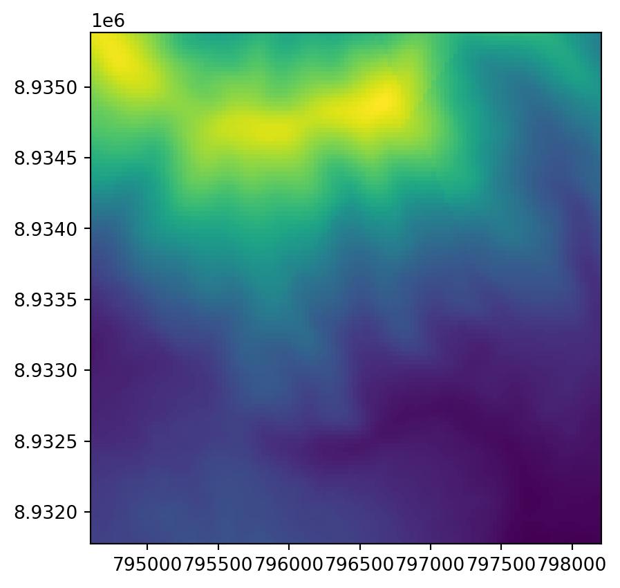
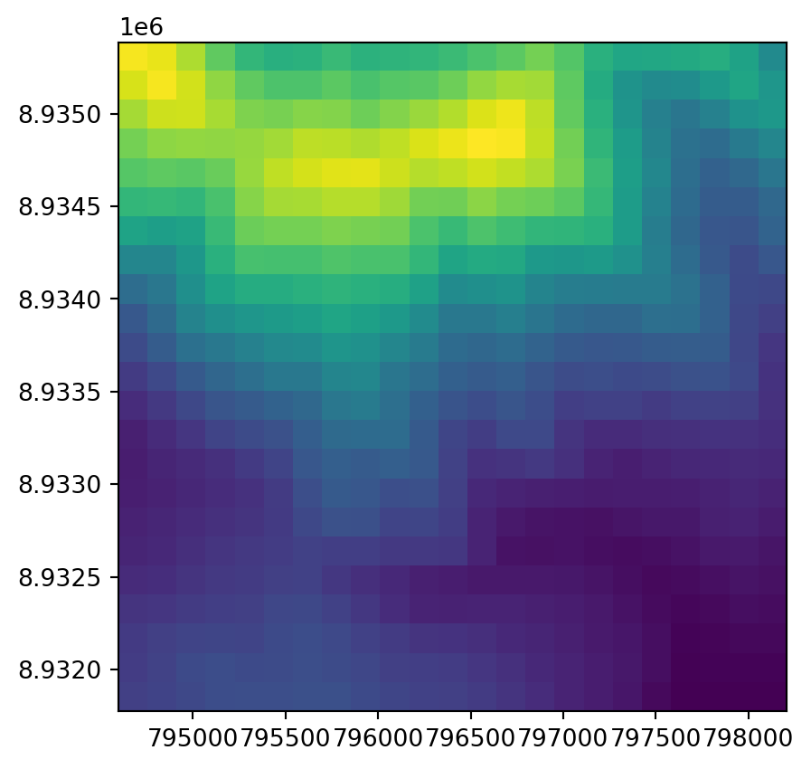
This is a good opportunity to demonstrate exporting a raster with modified dimensions and transformation matrix. We can update the raster metadata required for writing with the update method.
dst_kwargs = src.meta.copy()
dst_kwargs.update({
'transform': new_transform,
'width': r.shape[1],
'height': r.shape[0],
})
dst_kwargs{'driver': 'GTiff',
'dtype': 'float32',
'nodata': nan,
'width': 23,
'height': 23,
'count': 1,
'crs': CRS.from_epsg(32717),
'transform': Affine(156.93260869565017, 0.0, 794599.1076146346,
0.0, -156.9326086956198, 8935384.324602526)}Then we can create a new file (dem_agg5.tif) in writing mode, and write the values from the aggregated array r into that file (see Section 7.6.2).
dst = rasterio.open('output/dem_agg5.tif', 'w', **dst_kwargs)
dst.write(r, 1)
dst.close()The opposite operation, namely disaggregation, is when we increase the resolution of raster objects. Either of the supported resampling methods (see above) can be used. However, since we are not actually summarizing information but transferring the value of a large pixel into multiple small pixels, it makes sense to use either:
- Nearest neighbor resampling (
rasterio.enums.Resampling.nearest), when want to keep the original values as-is, since modifying them would be incorrect (such as in categorical rasters) - Smoothing techniques, such as bilinear resampling (
rasterio.enums.Resampling.bilinear), when we would like the smaller pixels to reflect gradual change between the original values, e.g., when the disaggregated raster is used for visualization purposes
To disaggregate a raster, we go through exactly the same workflow as for aggregation, only using a different scaling factor, such as factor=5 instead of factor=0.2, i.e., increasing the number of raster pixels instead of decreasing. In the example below, we disaggregate using bilinear interpolation, to get a smoothed high-resolution raster.
factor = 5
r2 = src.read(1,
out_shape=(
int(src.height * factor),
int(src.width * factor)
),
resampling=rasterio.enums.Resampling.bilinear
)As expected, the dimensions of the disaggregated raster are this time ~5 times bigger than the original ones.
r2.shape(585, 585)To calculate the new transform, we use the same expression as for aggregation, only with the new r2 shape.
new_transform2 = src.transform * src.transform.scale(
(src.width / r2.shape[1]),
(src.height / r2.shape[0])
)
new_transform2Affine(6.169999999999921, 0.0, 794599.1076146346,
0.0, -6.169999999998726, 8935384.324602526)The original raster dem.tif was already quite detailed, so it would be difficult to see any difference when plotting it along with the disaggregation result. A zoom-in of a small section of the rasters works better. Figure 4.36 allows us to see the top-left corner of the original raster and the disaggregated one, demonstrating the increase in the number of pixels through disaggregation.
rasterio.plot.show(src.read(1)[:5, :5], transform=src.transform);
rasterio.plot.show(r2[:25, :25], transform=new_transform2);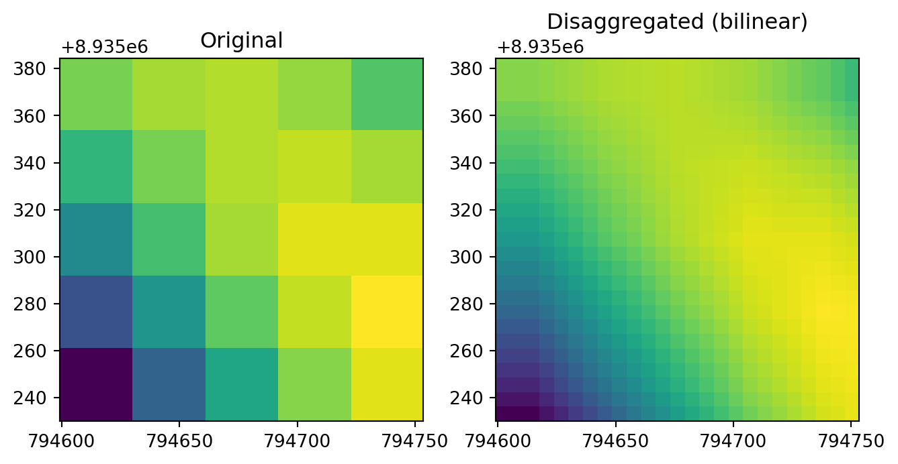
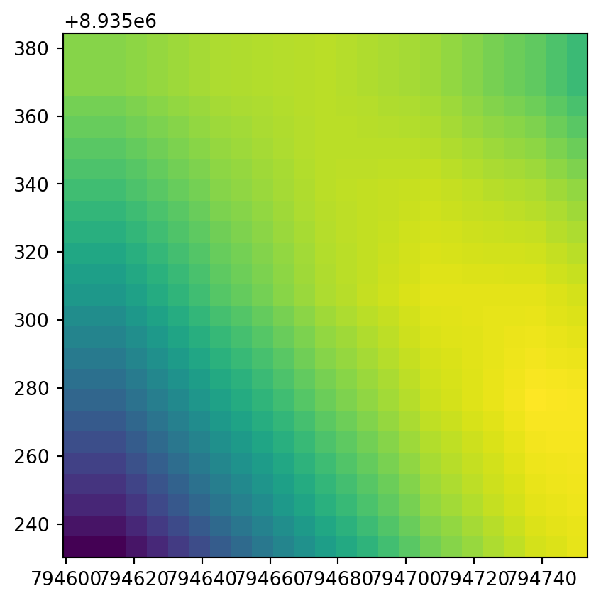
Code to export the disaggregated raster would be identical to the one used above for the aggregated raster.
4.3.4 Resampling
Raster aggregation and disaggregation (Section 4.3.3) are only suitable when we want to change just the resolution of our raster by a fixed factor. However, what to do when we have two or more rasters with different resolutions and origins? This is the role of resampling—a process of computing values for new pixel locations. In short, this process takes the values of our original raster and recalculates new values for a target raster with custom resolution and origin (Figure 4.37).
There are several methods for estimating values for a raster with different resolutions/origins (Figure 4.37). The main resampling methods include:
- Nearest neighbor: assigns the value of the nearest cell of the original raster to the cell of the target one. This is a fast simple technique that is usually suitable for resampling categorical rasters
- Bilinear interpolation: assigns a weighted average of the four nearest cells from the original raster to the cell of the target one. This is the fastest method that is appropriate for continuous rasters
- Cubic interpolation: uses values of the 16 nearest cells of the original raster to determine the output cell value, applying third-order polynomial functions. Used for continuous rasters and results in a smoother surface compared to bilinear interpolation, but is computationally more demanding
- Cubic spline interpolation: also uses values of the 16 nearest cells of the original raster to determine the output cell value, but applies cubic splines (piecewise third-order polynomial functions). Used for continuous rasters
- Lanczos windowed sinc resampling: uses values of the 36 nearest cells of the original raster to determine the output cell value. Used for continuous rasters
- Additionally, we can use straightforward summary methods, taking into account all pixels that coincide with the target pixel, such as average (Figure 4.35), minimum, maximum (Figure 4.37), median, mode, and sum
The above explanation highlights that only nearest neighbor resampling is suitable for categorical rasters, while all remaining methods can be used (with different outcomes) for continuous rasters.
With rasterio, resampling can be done using the rasterio.warp.reproject function . To clarify this naming convention, note that raster reprojection is not fundamentally different from resampling—the difference is just whether the target grid is in the same CRS as the origin (resampling) or in a different CRS (reprojection). In other words, reprojection is resampling into a grid that is in a different CRS. Accordingly, both resampling and reprojection are done using the same function rasterio.warp.reproject. We will demonstrate reprojection using rasterio.warp.reproject later in Section 6.8.
The information required for rasterio.warp.reproject, whether we are resampling or reprojecting, is:
- The source and target CRS. These may be identical, when resampling, or different, when reprojecting
- The source and target transform
Importantly, rasterio.warp.reproject can work with file connections, such as a connection to an output file in write ('w') mode. This makes the function efficient for large rasters.
The target and destination CRS are straightforward to specify, depending on our choice. The source transform is also available, e.g., through the .transform property of the source file connection. The only complicated part is to figure out the destination transform. When resampling, the transform is typically derived either from a template raster, such as an existing raster file that we would like our origin raster to match, or from a numeric specification of our target grid (see below). Otherwise, when the exact grid is not of importance, we can simply aggregate or disaggregate our raster as shown above (Section 4.3.3). (Note that when reprojecting, the target transform is not as straightforward to figure out, therefore we further use the rasterio.warp.calculate_default_transform function to compute it, as will be shown in Section 6.8.)
Let’s demonstrate resampling into a destination grid which is specified through numeric constraints, such as the extent and resolution. These could have been specified manually (such as here), or obtained from a template raster metadata that we would like to match. Note that the resolution of the destination grid is ~10 times more coarse (300 \(m\)) than the original resolution of dem.tif (~30 \(m\)) (Figure 4.37).
xmin = 794650
xmax = 798250
ymin = 8931750
ymax = 8935350
res = 300The corresponding transform based on these constraints can be created using the rasterio.transform.from_origin function, as follows:
dst_transform = rasterio.transform.from_origin(
west=xmin,
north=ymax,
xsize=res,
ysize=res
)
dst_transformAffine(300.0, 0.0, 794650.0,
0.0, -300.0, 8935350.0)Again, note that in case we needed to resample into a grid specified by an existing “template” raster, we could skip this step and simply read the transform from the template file, as in rasterio.open('template.tif').transform.
Now, we can move on to creating the destination file connection. For that, we also have to know the raster dimensions that can be derived from the extent and the resolution.
width = int((xmax - xmin) / res)
height = int((ymax - ymin) / res)
width, height(12, 12)Now we can create the destination file connection. We are using the same metadata as the source file, except for the dimensions and the transform, which are going to be different and reflecting the resampling process.
dst_kwargs = src.meta.copy()
dst_kwargs.update({
'transform': dst_transform,
'width': width,
'height': height
})
dst = rasterio.open('output/dem_resample_nearest.tif', 'w', **dst_kwargs)Finally, we reproject using function rasterio.warp.reproject. Note that the source and destination are specified using rasterio.band applied on either the file connection, reflecting the fact that we operate on a specific layer of the rasters. The resampling method being used here is nearest neighbor resampling (rasterio.enums.Resampling.nearest).
rasterio.warp.reproject(
source=rasterio.band(src, 1),
destination=rasterio.band(dst, 1),
src_transform=src.transform,
src_crs=src.crs,
dst_transform=dst_transform,
dst_crs=src.crs,
resampling=rasterio.enums.Resampling.nearest
)(Band(ds=<open DatasetWriter name='output/dem_resample_nearest.tif' mode='w'>, bidx=1, dtype='float32', shape=(12, 12)),
Affine(300.0, 0.0, 794650.0,
0.0, -300.0, 8935350.0))In the end, we close the file and create a new file output/dem_resample_nearest.tif with the resampling result (Figure 4.37).
dst.close()Here is another code section just to demonstrate a different resampling method, the maximum resampling, i.e., every new pixel gets the maximum value of all the original pixels it coincides with. Note that the transform is identical (Figure 4.37), all arguments other than the resampling method are identical.
dst = rasterio.open('output/dem_resample_maximum.tif', 'w', **dst_kwargs)
rasterio.warp.reproject(
source=rasterio.band(src, 1),
destination=rasterio.band(dst, 1),
src_transform=src.transform,
src_crs=src.crs,
dst_transform=dst_transform,
dst_crs=src.crs,
resampling=rasterio.enums.Resampling.max
)
dst.close()The original raster dem.tif, and the two resampling results dem_resample_nearest.tif and dem_resample_maximum.tif, are shown in Figure 4.37.
# Input
fig, ax = plt.subplots(figsize=(4,4))
rasterio.plot.show(src, ax=ax);
# Nearest neighbor
fig, ax = plt.subplots(figsize=(4,4))
rasterio.plot.show(rasterio.open('output/dem_resample_nearest.tif'), ax=ax);
# Maximum
fig, ax = plt.subplots(figsize=(4,4))
rasterio.plot.show(rasterio.open('output/dem_resample_maximum.tif'), ax=ax);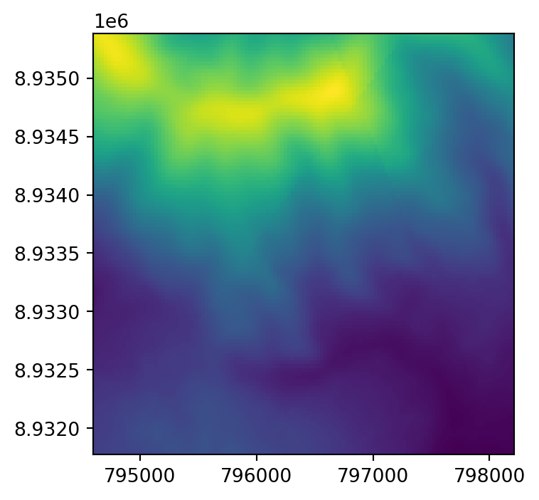
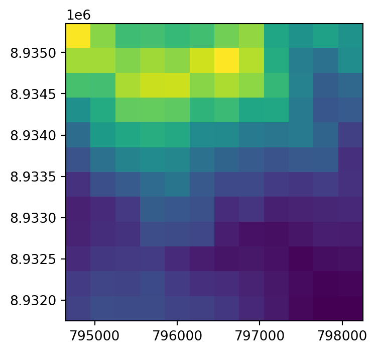
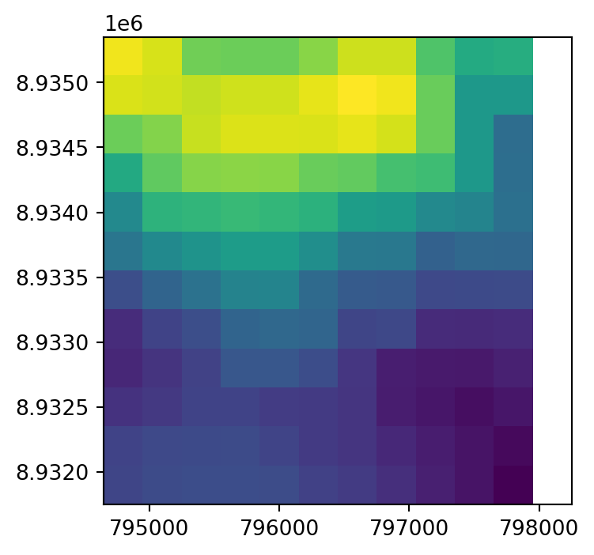
4.4 Exercises
4.5 References
Douglas, David H, and Thomas K Peucker. 1973. “Algorithms for the Reduction of the Number of Points Required to Represent a Digitized Line or Its Caricature.” Cartographica: The International Journal for Geographic Information and Geovisualization 10 (2): 112–22. https://doi.org/bjwv52.
Visvalingam, M., and J. D. Whyatt. 1993. “Line Generalisation by Repeated Elimination of Points.” The Cartographic Journal 30 (1): 46–51. https://doi.org/fx74gh.